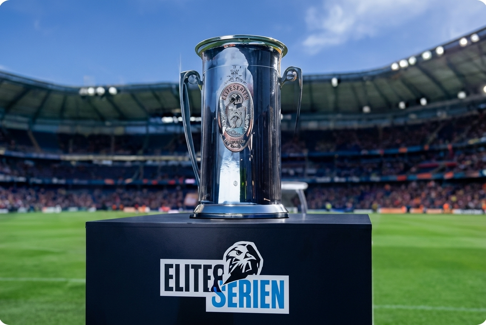

Campeonato Norueguês
Descubra como funciona o futebol nacional da Noruega.

Eliteserien
A Eliteserien é a principal divisão do futebol norueguês. A competição reúne clubes de diferentes regiões do país em busca do título nacional e de vagas em competições europeias.
Principais clubes
O futebol norueguês possui clubes tradicionais e equipes que ganharam destaque internacional. Entre eles estão Rosenborg, Molde e Bodø/Glimt.
Curiosidades
O futebol norueguês é bastante influenciado pelas condições climáticas do país. A temporada geralmente acontece entre a primavera e o outono, diferentemente de muitas ligas europeias.